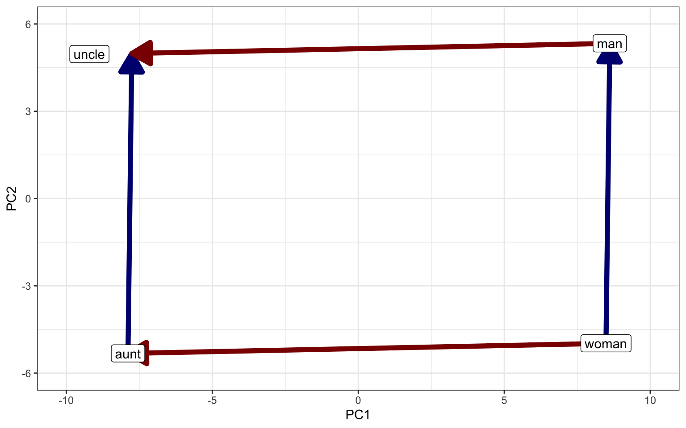
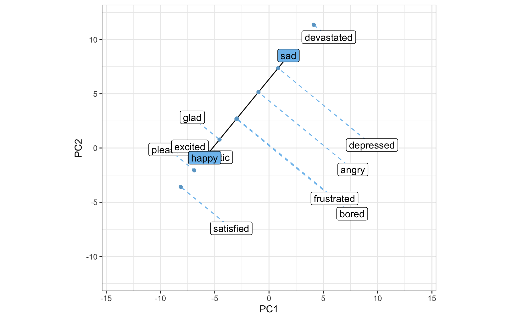

# load surprise dictionary
surprise_dict <- quanteda.sentiment::data_dictionary_NRC["surprise"]
# estimate frequency of dictionary words
surprise_dict_freqs <- hippocorpus_dfm |>
dfm_keep(surprise_dict$surprise) |>
quanteda.textstats::textstat_frequency() |>
select(feature, frequency)
# word2vec embeddings of dictionary words
surprise_ddr <- predict(word2vec_mod, surprise_dict$surprise, type = "embedding") |>
as_tibble(rownames = "feature") |>
left_join(surprise_dict_freqs) |>
replace_na(list(frequency = 0))
# average dictionary embedding (weighted by frequency)
surprise_ddr <- surprise_ddr |>
summarise(across(V1:V300, ~weighted.mean(.x, frequency, na.rm = TRUE))) |>
select(V1:V300) |>
unlist()
# document embeddings
hippocorpus_word2vec <- hippocorpus_dfm |>
textstat_embedding(word2vec_mod)
# score documents by surprise
hippocorpus_surprise_ddr <- hippocorpus_word2vec |>
rowwise() |>
mutate(
surprise = cos_sim(c_across(V1:V300), surprise_ddr),
# transform cosine similarity to stay between 0 and 1
surprise = surprise/2 + 1/2
) |>
ungroup() |>
select(-c(V1:V300))
# rejoin docvars
hippocorpus_surprise_ddr <- hippocorpus_surprise_ddr |>
bind_cols(docvars(hippocorpus_corp))
This page is still under construction. Come back soon!
20.1 Representing Psychological Constructs
In Chapter 18 we measured the surprise in texts by comparing their embeddings to that of a single word: “surprised”. But does the embedding of the word “surprised” fully capture the concept of surprise as an emotion? Faced with this question of construct validity, we have two options:
- Conduct a Validation Study: We could find or construct a dataset of texts that were rated by a human (or ideally, multiple humans) on the extent to which they reflect the emotion of surprise. We could then compare our embedding-based surprise scores to the human ratings.
- Use an Already-Validated Construct Definition: Properly validating a new measure is hard work. When possible, psychology researchers often prefer to use an existing measure that has already been carefully validated in the past.
The second option may seem difficult, since embeddings are very new to the field, so few if any validated vector representations of constructs are available. As it turns out, this is not a problem—any language-based psychological measure can be represented as a vector! Psychology has used language-based measures like dictionaries and questionnaires for over a century. To smoothly continue this existing research in the age of vector spaces, let’s consider how to translate between the two.
20.1.1 Distributed Dictionary Representation (DDR)
Let’s begin with a straightforward sort of psychological measure—the dictionary. We have already discussed dictionaries extensively in Chapter 14 and noted that psychology researchers have been constructing, validating, and publicizing dictionaries for decades (Section 14.6). But these dictionaries are designed for word counting—How do we apply them to a vector-based analysis? Garten et al. (2018) propose a simple solution: Get word embeddings (Section 18.3) for each word in the dictionary, and average them together to create a single Distributed Dictionary Representation (DDR). The dictionary construct can then be measured by comparing text embeddings to the DDR.
DDR cannot entirely replace word counts; for linguistic concepts like pronoun use or the passive voice, dictionary-based word counts are still necessary. But DDR is ideal for studies of abstract constructs like emotions, that refer to the general gist of a text rather than particular words. The rich representation of word embeddings allows DDR to capture even the subtlest associations between words and constructs, and to precisely reflect the extent to which each word is associated with each construct. It can do this even for texts that do not contain any dictionary words. Because embeddings are continuous and already calibrated to the probabilities of word use in language, DDR also avoids the difficult statistical problems that arise due to the strange distributions of word counts (Chapter 16).
Garten et al. (2018) found that DDR works best with smaller dictionaries of only the words most directly connected to the construct being measured (around 30 words worked best in their experiments). Word embeddings work by overvaluing informative words (Section 18.3.4)—a desirable property for raw texts, in which uninformative words tend to be very frequent. But dictionaries only include one of each word. In longer dictionaries with more infrequent, tangentially connected words, averaging word embeddings will therefore overvalue those infrequent words and skew the DDR. This can be fixed with Garten et al.’s method of picking out only the most informative words. Alternatively, it could be fixed by measuring the frequency of each dictionary word in a corpus and weighting the average embedding by that frequency. This method is actually more consistent with the way most dictionaries are validated, by counting the frequencies of dictionary words in text (Chapter 14).
Let’s measure surprise in the Hippocorpus texts by computing a DDR of the NRC Word-Emotion Association Lexicon (S. M. Mohammad & Turney, 2013; S. Mohammad & Turney, 2010), which we used in Chapter 14. To correct for word informativeness, we will weight the dictionary word embeddings by their frequency in the corpus.
With the new measure of surprise, we can retest the hypothesis that true autobiographical stories include more surprise than imagined stories.
# logistic regression
surprise_mod_ddr <- glm(
surprise ~ memType,
family = binomial,
hippocorpus_surprise_ddr
)
summary(surprise_mod_ddr)#>
#> Call:
#> glm(formula = surprise ~ memType, family = binomial, data = hippocorpus_surprise_ddr)
#>
#> Coefficients:
#> Estimate Std. Error z value Pr(>|z|)
#> (Intercept) 1.81235 0.05484 33.049 memTyperecalled -0.02041 0.07711 -0.265 0.791
#> memTyperetold -0.02250 0.09587 -0.235 0.814
#> ---
#> Signif. codes: 0 '***' 0.001 '**' 0.01 '*' 0.05 '.' 0.1 ' ' 1
#>
#> (Dispersion parameter for binomial family taken to be 1)
#>
#> Null deviance: 6.9881 on 6853 degrees of freedom
#> Residual deviance: 6.8986 on 6851 degrees of freedom
#> AIC: 2103.6
#>
#> Number of Fisher Scoring iterations: 5
We again find no significant difference in surprise between remembered and recalled stories. This is consistent with our results from Chapter 14, where we tested the same hypothesis with the same dictionary, but used word counts rather than embeddings.
20.1.1.1 DDR for Word-by-Word Analysis
Another advantage of DDR over dictionary-based word counts is that DDR enables word-by-word analysis of text. It is not very informative to count how many surprise words are in each word (it will either be one or zero), but we can compare the embedding of each word to the surprise DDR—how close are they in the vector space? This allows us to see how a construct spreads out within a single text. As an example, let’s take a single story from the Hippocorpus:
# full text as string
story <- word(hippocorpus_df$story[3], end = 140L)
cat(story)#> It seems just like yesterday but today makes five months ago it happened. I had been watching my phone like an owl for the past week. I was waiting for a work related call that my team was waiting for to close a important deal. It wasnt the call I expected though. It was for my sister was in labor with the twins. My sister is only 7 months pregnant. I got the call shortly after arriving at work. Just as fast I was back out the door and on my way to the hospital. When I arrived my sister had just delivered and I just was in awe. Even though they were a bit small they were mighty. They were the most precious things I had ever seen. I held my niece and nephew and couldnt stop crying.
To visualize surprise within this text, we can separate it into words and find the embedding of each word. Rather than averaging all of these embeddings together to get the embedding of the full text, we can compute a rolling average, averaging each word’s embedding with those of its neighbors.
# separate into vector of tokens
story <- word(hippocorpus_df$story[3], end = 140L) |>
tokens() |> as.character()
# rolling average of embeddings
story_surprise <- as_tibble(predict(word2vec_mod, story, type = "embedding")) |>
mutate(
across(
V1:V300,
~zoo::rollapply(
.x, 4, mean, na.rm = TRUE,
align = "center",
fill = c(head(.x, 1), NA, tail(.x, 1))
)
)
)
# vector of computed surprise (cosine similarity)
story_surprise <- story_surprise |>
rowwise() |>
mutate(surprise = cos_sim(c_across(V1:V300), surprise_ddr)) |>
pull(surprise)We can now visualize the surprise in each word of the text. Since ggplot2 makes it difficult to plot dynamically colored text in one continuous chunk, we will use ANSI color codes to print the text directly to the console.
# (see https://www.hackitu.de/termcolor256/ for info on ANSI colors)
# blue-red heat scale
ansi_scale <- c(
063, 105, 147, 189, 188, 230, 223,
224, 217, 210, 203, 196, 160, 124
)
# turn scale value into ANSI color code
map_to_ansi <- function(x, ansi_scale){
x_new <- (x - min(x, na.rm = TRUE))*(length(ansi_scale)/diff(range(x, na.rm = TRUE))) + 1
x_new
ansi_scale[round(x_new)]
}
story_surprise <- map_to_ansi(story_surprise, ansi_scale)
# print
for (i in 1:length(story_surprise)) {
if(is.na(story_surprise[i])){
cat(story[i], " ")
}else{
cat(paste0("\033[48;5;", story_surprise[i], "m", story[i], " \033[0m"))
}
}#> It seems just like yesterday but today makes five months ago it happened . I had been watching my phone like an owl for the past week . I was waiting for a work related call that my team was waiting for to close a important deal . It wasnt the call I expected though . It was for my sister was in labor with the twins . My sister is only 7 months pregnant . I got the call shortly after arriving at work . Just as fast I was back out the door and on my way to the hospital . When I arrived my sister had just delivered and I just was in awe . Even though they were a bit small they were mighty . They were the most precious things I had ever seen . I held my niece and nephew and couldnt stop crying .
20.1.2 Contextualized Construct Representation (CCR)
Dictionaries are not the only validated psychological measures that we can apply using embeddings. With contextualized embeddings, we can extract the gist of any text and compare it to that of any other text (Chapter 19). Atari et al. (2023) propose to do this with the most popular form of psychometric scale: the questionnaire. Psychologists have been using questionnaires to measure things for over a century, and tens of thousands of validated questionnaires are now available online. The LLM embedding of a questionnaire is referred to as a Contextualized Construct Representation (CCR).
We can use CCR to measure surprise in the Hippocorpus texts. For our questionnaire, we will use an adapted version of the surprise scale used by D. Choi & Choi (2010) and I. Choi & Nisbett (2000).
surprise_items <- c(
"I was extremely surprised by the outcome of the event.",
"The outcome of the event was extremely interesting.",
"The outcome of the event was extremely new."
)
Beware of Reverse Coding!
Many questionnaires include reverse-coded items (e.g. “I often feel happy” on a depression questionnaire). The easiest way to deal with these is to manually add negations to flip their meaning (e.g. “I do not often feel happy”).
The first step in using CCR is to compute contextualized embeddings for the texts in the Hippocorpus dataset. We already did this in Chapter 19. The next step is to compute contextualized embeddings for the items in the questionnaire, and average them to produce a CCR.
# embed items (using the same model as we used before)
library(text)
surprise_sbert <- textEmbed(
surprise_items,
model = "sentence-transformers/all-MiniLM-L12-v2", # model name
layers = -2, # second to last layer (default)
tokens_select = "[CLS]", # use only [CLS] token
dim_name = FALSE,
keep_token_embeddings = FALSE
)
# compute CCR by averaging item embeddings
surprise_ccr <- surprise_sbert$texts[[1]] |>
summarise(across(everything(), mean)) |>
unlist()We can now measure surprise in the Hippocorpus texts by computing the cosine similarity between their embeddings and the surprise CCR.1
# score documents by surprise
hippocorpus_surprise_ccr <- hippocorpus_sbert |>
rowwise() |>
mutate(
surprise = cos_sim(c_across(Dim1:Dim384), surprise_ccr),
# transform cosine similarity to stay between 0 and 1
surprise = surprise/2 + 1/2
) |>
ungroup() |>
select(-c(Dim1:Dim384))
# logistic regression
surprise_mod_ccr <- glm(
surprise ~ memType,
family = binomial,
hippocorpus_surprise_ccr
)
summary(surprise_mod_ccr)#>
#> Call:
#> glm(formula = surprise ~ memType, family = binomial, data = hippocorpus_surprise_ccr)
#>
#> Coefficients:
#> Estimate Std. Error z value Pr(>|z|)
#> (Intercept) 5.63709 0.32025 17.602 memTyperecalled -0.02168 0.44955 -0.048 0.962
#> memTyperetold -0.02781 0.55768 -0.050 0.960
#> ---
#> Signif. codes: 0 '***' 0.001 '**' 0.01 '*' 0.05 '.' 0.1 ' ' 1
#>
#> (Dispersion parameter for binomial family taken to be 1)
#>
#> Null deviance: 0.57625 on 6853 degrees of freedom
#> Residual deviance: 0.57283 on 6851 degrees of freedom
#> AIC: 55.455
#>
#> Number of Fisher Scoring iterations: 9
Once again, we find no significant difference in surprise between remembered and recalled stories. However, CCR has a fundamental problem that needs to be addressed.
Embeddings capture the overall “vibes” of a text, including its tone and dialect. With CCR, we are comparing the “vibes” of a questionnaire written by academics to the “vibes” of narratives written by Hippocorpus participants. By comparing these vectors, we are not just measuring how much surprise is in each text—we are also measuring the extent to which each text is in the style of a questionnaire written by academics. This introduces a confounding variable into our analysis—questionnaire-ness.
The questionnaire-ness problem means that CCR is most effective for analyzing texts that bear a strong similarity to the questionnaire itself. For example, if you are analyzing participant descriptions of their own values, and your questionnaire items are statements about values in the first person (as any questionnaires are), CCR is likely to work well, especially with the improvement described in Section 20.2.2 and Section 20.2.2.2. With this method, you can compare participant responses to the questionnaire without actually administering the questionnaire itself; participants can answer in their own words, which CCR will compare to the wording of the questionnaire.
20.2 Reasoning in Vector Space: Beyond Cosine Similarity and Dot Products
20.2.1 Additive Analogies
Nearly every introduction to word embeddings opens with their analogical property. This is for good reason: it is extremely cool. Embeddings can be added to each other in order to arrive at new concepts. Here’s an example, using word2vec embeddings reduced to two dimensions with PCA:

If we subtract the embedding of “man” from the embedding of “woman”, we get the vector shown in blue. This vector represents the move from male to female gender. A vector between two embeddings is called an anchored vector. So when we add the man-woman anchored vector to the embedding of “aunt”, we get very close to the embedding of “uncle”. This property was first noted in word2vec (Mikolov et al., 2013), and GloVe (Pennington et al., 2014) was specifically designed with it in mind.
Additive Analogies in Contextualized Embeddings
Notice that the analogical property relies on the magnitude of the vectors—if some vectors were shorter or longer than necessary, the parallelogram would not fit. This means that analogical reasoning may not be applicable to LLM embeddings, which are often organized in nonlinear patterns (Cai et al., 2021; Ethayarajh, 2019; Gao et al., 2019). Even specialized models like SBERT are generally not designed with the additive analogical property in mind (Reimers & Gurevych, 2019). Even though some geometrically motivated methods work fairly well in LLM embeddings, as we will see in Section 20.2.2.2, there is lots of room for improvement in this area.2
The simplest application of the analogical property is to complete analogies like “telescope is to astronomy as ________ is to psychology.” You can find word2vec’s answer to this puzzle by subtracting the embedding of “telescope” from the embedding of “astronomy”, adding the result to the embedding of “psychology”, and finding the embedding with the lowest Euclidean distance to that vector.
20.2.2 Anchored Vectors For Better Construct Representations
There is a fundamental problem with all embeddings that additive analogical reasoning can help us solve. Consider the embeddings for “happy” and “sad”. These may seem like opposites, but actually they are likely to be very close to each other in vector space because they both relate to emotional valence. This means that if we try to measure the happiness of words by comparing their embeddings to the embedding for “happy”, we will actually be measuring the extent to which the words relate to emotion in general. The word “depression” might seem happier than the word “table”, since depression is more emotion-related. This problem can be solved by using anchored vectors. Just like we created an anchored vector between “man” and “woman” to represent masculinity (as opposed to femininity), we can create an anchored vector between “happy” and “sad” to represent happiness (as opposed to sadness). As we saw in Section 20.2.1, anchored vectors can be applied wherever necessary in embedding space.
To measure constructs with an anchored vector, take the dot product of your text embeddings with the anchored vector. This is the equivalent of “projecting” the embeddings down onto the scale between one end of the anchored vector and the other.3

By projecting each embedding down onto the anchored vector between happy and sad, we create a scale from happy to sad.4 This is sometimes referred to as semantic projection (Grand et al., 2022).
20.2.2.1 Improving DDR With Anchored Vectors
In Section 14.4, we used two dictionaries to measure surprise as opposed to anticipation with word counts. By creating an anchored vector between surprise and anticipation, we can now replicate that analysis using DDR. The first step is to create a DDR for each dictionary. Since we already have one for surprise from Section 20.1.1, we just need to replicate the process for anticipation.
# get dictionary
anticipation_dict <- quanteda.sentiment::data_dictionary_NRC$anticipation
# estimate frequency of dictionary words
anticipation_dict_freqs <- hippocorpus_dfm |>
dfm_keep(anticipation_dict) |>
quanteda.textstats::textstat_frequency() |>
select(feature, frequency)
# word2vec embeddings of dictionary words
anticipation_ddr <- predict(word2vec_mod, anticipation_dict, type = "embedding") |>
as_tibble(rownames = "feature") |>
left_join(anticipation_dict_freqs) |>
replace_na(list(frequency = 0))
# average dictionary embedding (weighted by frequency)
anticipation_ddr <- anticipation_ddr |>
summarise(across(V1:V300, ~weighted.mean(.x, frequency, na.rm = TRUE))) |>
select(V1:V300) |>
unlist()Now that we have DDRs for both surprise and anticipation, we can create an anchored vector between them:
surprise_ddr_anchored <- surprise_ddr - anticipation_ddrWe can now score the Hippocorpus texts by the dot product between their word2vec embeddings and the anchored vector, effectively projecting each one onto a scale between anticipation and surprise.
# score documents by surprise
hippocorpus_surprise_ddr_anchored <- hippocorpus_word2vec |>
rowwise() |>
mutate(surprise = dot_prod(c_across(V1:V300), surprise_ddr_anchored)) |>
ungroup() |>
select(-c(V1:V300))
# rejoin docvars
hippocorpus_surprise_ddr_anchored <- hippocorpus_surprise_ddr_anchored |>
bind_cols(docvars(hippocorpus_corp))Since the scale is theoretically infinite (a text could have more surprise than the average dictionary embedding for surprise), we can analyze it with a standard linear regression.
surprise_mod_ddr_anchored <- lm(
surprise ~ memType,
data = hippocorpus_surprise_ddr_anchored
)
summary(surprise_mod_ddr_anchored)#>
#> Call:
#> lm(formula = surprise ~ memType, data = hippocorpus_surprise_ddr_anchored)
#>
#> Residuals:
#> Min 1Q Median 3Q Max
#> -2.65062 -0.36894 -0.00133 0.37938 2.64127
#>
#> Coefficients:
#> Estimate Std. Error t value Pr(>|t|)
#> (Intercept) -4.19667 0.01084 -387.242 memTyperecalled 0.01157 0.01529 0.757 0.4493
#> memTyperetold -0.04791 0.01905 -2.515 0.0119 *
#> ---
#> Signif. codes: 0 '***' 0.001 '**' 0.01 '*' 0.05 '.' 0.1 ' ' 1
#>
#> Residual standard error: 0.5689 on 6851 degrees of freedom
#> Multiple R-squared: 0.001468, Adjusted R-squared: 0.001176
#> F-statistic: 5.035 on 2 and 6851 DF, p-value: 0.006531
We found no significant difference between imagined and recalled stories, but we did find a significant difference between imagined and retold stories such that retold stories had slightly less surprise as opposed to anticipation.
20.2.2.2 Improving CCR With Anchored Vectors
Remember the questionnaire-ness problem with CCR from Section 20.1.2? Anchored vectors can help us solve this problem. This time, let’s just negate each item from the surprise questionnaire, like this:
surprise_items_pos <- c(
"I was extremely surprised by the outcome of the event.",
"The outcome of the event was extremely interesting.",
"The outcome of the event was extremely new."
)
surprise_items_neg <- c(
"I was not surprised at all by the outcome of the event.",
"The outcome of the event was not interesting at all.",
"The outcome of the event was not new at all."
)This approach has the advantage of maintaining most of the original wording. By creating an anchored vector between the positive and negative CCRs, we can disregard this questionnaire-y wording, focusing only on the direction between lots of surprise and no surprise at all. Even though this approach makes big assumptions about the linearity of the contextualized embedding space (Section 20.2.1), it has been shown to work fairly well for a variety of constructs and models (Grand et al., 2022). It is particularly applicable to the Hippocorpus data, since the texts are first-person narratives about an event, just like the questionnaire items.
Let’s create the new anchored CCR and use it to reanalyze the Hippocorpus data.
# embed items (using the same model as we used before)
library(text)
surprise_neg_sbert <- textEmbed(
surprise_items_neg,
model = "sentence-transformers/all-MiniLM-L12-v2", # model name
layers = -2, # second to last layer (default)
tokens_select = "[CLS]", # use only [CLS] token
dim_name = FALSE,
keep_token_embeddings = FALSE
)
# compute negative CCR by averaging item embeddings
surprise_neg_ccr <- surprise_neg_sbert$texts[[1]] |>
summarise(across(everything(), mean)) |>
unlist()surprise_ccr_anchored <- surprise_ccr - surprise_neg_ccr
# score documents by surprise
hippocorpus_surprise_ccr_anchored <- hippocorpus_sbert |>
rowwise() |>
mutate(surprise = dot_prod(c_across(Dim1:Dim384), surprise_ccr_anchored)) |>
ungroup() |>
select(-c(Dim1:Dim384))
# linear regression
surprise_mod_ccr_anchored <- lm(
surprise ~ memType,
hippocorpus_surprise_ccr_anchored
)
summary(surprise_mod_ccr_anchored)#>
#> Call:
#> lm(formula = surprise ~ memType, data = hippocorpus_surprise_ccr_anchored)
#>
#> Residuals:
#> Min 1Q Median 3Q Max
#> -0.39157 -0.06969 -0.00115 0.06810 0.41258
#>
#> Coefficients:
#> Estimate Std. Error t value Pr(>|t|)
#> (Intercept) 1.061703 0.001922 552.448 memTyperecalled 0.010240 0.002712 3.775 0.000161 ***
#> memTyperetold 0.012183 0.003378 3.607 0.000312 ***
#> ---
#> Signif. codes: 0 '***' 0.001 '**' 0.01 '*' 0.05 '.' 0.1 ' ' 1
#>
#> Residual standard error: 0.1009 on 6851 degrees of freedom
#> Multiple R-squared: 0.00283, Adjusted R-squared: 0.002539
#> F-statistic: 9.721 on 2 and 6851 DF, p-value: 6.083e-05
We found a significant difference between imagined and recalled stories such that recalled stories had more surprising content (p < .001)! We also found that retold stories had more surprising content than imagined stories (p < .001). These results support Sap et al.’s hypothesis that true autobiographical stories would include more surprising events than imagined stories.
An example of using anchored vectors and CCR in research: Simchon et al. (2023) collected 10,000 posts from the r/depression subreddit, along with a control group of 100 posts each from 100 randomly selected subreddits. They then used a variant of SBERT, all-MiniLM-L6-v2 (see Chapter 19), to compute CCR embeddings of a psychological questionnaire measuring “locus of control,” the feeling that you have control over your own life. The questionnaire included items measuring an internal locus of control (“I have control”), and items measuring an external locus of control (“External forces have control”). Simchon et al. constructed an anchored vector to capture the direction between internal and external locus of control, and projected embeddings of the Reddit posts onto that vector to measure how much each post reflected an internal vs. an external locus of control. They found that posts in r/depression exhibited a more external locus of control than posts in the control group.
20.2.3 Correlational Anchored Vectors
In Section 15.4, we used the Crowdflower Emotion in Text dataset to generate a new dictionary for the emotion of surprise. We can use a similar approach to generate an anchored vector. Remember that the anchored vector for surprise is simply a direction in the embedding space. Rather than finding this direction by subtracting a negative construct embedding from a positive one (as we did in Section 20.2.2.2 and Section 20.2.2.2), we can use machine learning to find the direction that best represents surprise in a training dataset.
To train an anchored vector on the Crowdflower dataset, we will first need to embed its 40,000 Twitter posts. We will do this just as we did for the Hippocorpus texts in Section 18.3.1.
# data from https://data.world/crowdflower/sentiment-analysis-in-text
crowdflower <- read_csv("data/text_emotion.csv") |>
rename(text = content) |>
mutate(
doc_id = as.character(tweet_id),
surprise = if_else(sentiment == "surprise", "surprise", "no surprise")
)
crowdflower_dfm <- crowdflower |>
corpus() |>
tokens(remove_punct = TRUE, remove_url = TRUE) |>
dfm()
# word2vec document embeddings
crowdflower_word2vec <- crowdflower_dfm |>
textstat_embedding(word2vec_mod)
crowdflower <- crowdflower |>
left_join(crowdflower_word2vec, by = "doc_id")With Partial Least Squares (PLS) regression, which finds directions in the feature space that best correlate with the dependent variable (in this case, surprise), we can create a correlational anchored vector.
#> Loading required package: lattice
#>
#> Attaching package: 'caret'
#> The following object is masked from 'package:purrr':
#>
#> lift
set.seed(2024)
pls_surprise <- train(
surprise ~ .,
data = select(crowdflower, surprise, V1:V300),
method = "pls",
scale = FALSE, # keep original embedding dimensions
trControl = trainControl("cv", number = 10), # cross-validation
tuneLength = 1 # only 1 component (our anchored vector)
)
surprise_anchored_pls <- pls_surprise$finalModel$projection[,1]With the new correlational anchored vector, we can redo our analysis from Section 20.1.1.
# score documents by surprise
hippocorpus_surprise_anchored_pls <- hippocorpus_word2vec |>
rowwise() |>
mutate(surprise = dot_prod(c_across(V1:V300), surprise_anchored_pls)) |>
ungroup() |>
select(-c(V1:V300))
# rejoin docvars
hippocorpus_surprise_anchored_pls <- hippocorpus_surprise_anchored_pls |>
bind_cols(docvars(hippocorpus_corp))
surprise_mod_anchored_pls <- lm(
surprise ~ memType,
data = hippocorpus_surprise_anchored_pls
)
summary(surprise_mod_anchored_pls)#>
#> Call:
#> lm(formula = surprise ~ memType, data = hippocorpus_surprise_anchored_pls)
#>
#> Residuals:
#> Min 1Q Median 3Q Max
#> -1.28741 -0.20195 0.00297 0.21233 1.03080
#>
#> Coefficients:
#> Estimate Std. Error t value Pr(>|t|)
#> (Intercept) -1.506064 0.005941 -253.519 memTyperecalled 0.105878 0.008384 12.629 memTyperetold 0.093503 0.010442 8.955 ---
#> Signif. codes: 0 '***' 0.001 '**' 0.01 '*' 0.05 '.' 0.1 ' ' 1
#>
#> Residual standard error: 0.3119 on 6851 degrees of freedom
#> Multiple R-squared: 0.02523, Adjusted R-squared: 0.02494
#> F-statistic: 88.65 on 2 and 6851 DF, p-value: Once again we find significant results in support of Sap et al. (2022)!
20.2.4 Machine Learning Methods
After Section 20.2.3, you may wonder why we stopped at a single direction in embedding space. Why not go all out with the machine learning? If you wondered this, great job! Psychologists are increasingly training machine learning algorithms on text embeddings to quantify relevant constructs (Kjell et al., 2022). Indeed, this is the approach used to generate the cover of this book.
With machine learning approaches, the nonlinearity of contextualized embedding spaces becomes less of a problem.
The text package provides
A few pretrained embedding-based valence models: https://osf.io/v4jb5
Chersoni et al. (2021) used partial least squares regression to map distributional embeddings to human-rated semantic features derived from research in cognitive psychology.
Some research advises using both the [CLS] token and an aggregation of the other token embeddings (Lee et al., 2023)
Atari, M., Omrani, A., & Dehghani, M. (2023). Contextualized construct representation: Leveraging psychometric scales to advance theory-driven text analysis. PsyArXiv. https://doi.org/10.31234/osf.io/m93pd
Cai, X., Huang, J., Bian, Y., & Church, K. (2021). Isotropy in the contextual embedding space: Clusters and manifolds. International Conference on Learning Representations. https://openreview.net/forum?id=xYGNO86OWDH
Chersoni, E., Santus, E., Huang, C.-R., & Lenci, A. (2021). Decoding word embeddings with brain-based semantic features. Computational Linguistics, 47(3), 663–698. https://doi.org/10.1162/coli_a_00412
Choi, D., & Choi, I. (2010). A comparison of hindsight bias in groups and individuals: The moderating role of plausibility. Journal of Applied Social Psychology, 40(2), 325–343. https://search.ebscohost.com/login.aspx?direct=true&db=sxi&AN=48116256&site=ehost-live
Choi, I., & Nisbett, R. E. (2000). Cultural psychology of surprise: Holistic theories and recognition of contradiction. Journal of Personality and Social Psychology, 79(6), 890–905.
Ethayarajh, K. (2019). How contextual are contextualized word representations? Comparing the geometry of BERT, ELMo, and GPT-2 embeddings. https://arxiv.org/abs/1909.00512
Gao, J., He, D., Tan, X., Qin, T., Wang, L., & Liu, T.-Y. (2019). Representation degeneration problem in training natural language generation models. https://arxiv.org/abs/1907.12009
Garten, J., Hoover, J., Johnson, K. M., Boghrati, R., Iskiwitch, C., & Dehghani, M. (2018). Dictionaries and distributions: Combining expert knowledge and large scale textual data content analysis: Distributed dictionary representation. Behavior Research Methods, 50, 344–361.
Grand, G., Blank, I. A., Pereira, F., & Fedorenko, E. (2022). Semantic projection recovers rich human knowledge of multiple object features from word embeddings. Nature Human Behaviour, 6(7), 975–987. https://doi.org/10.1038/s41562-022-01316-8
Kjell, O., Sikström, S., Kjell, K., & Schwartz, H. (2022). Natural language analyzed with AI-based transformers predict traditional subjective well-being measures approaching the theoretical upper limits in accuracy. Scientific Reports, 12, 3918. https://doi.org/10.1038/s41598-022-07520-w
Lee, K., Choi, G., & Choi, C. (2023). Use all tokens method to improve semantic relationship learning. Expert Systems with Applications, 233, 120911. https://doi.org/https://doi.org/10.1016/j.eswa.2023.120911
Li, B., Zhou, H., He, J., Wang, M., Yang, Y., & Li, L. (2020). On the sentence embeddings from pre-trained language models. https://arxiv.org/abs/2011.05864
Mikolov, T., Yih, W., & Zweig, G. (2013). Linguistic regularities in continuous space word representations. In L. Vanderwende, H. Daumé III, & K. Kirchhoff (Eds.), Proceedings of the 2013 conference of the north American chapter of the association for computational linguistics: Human language technologies (pp. 746–751). Association for Computational Linguistics. https://aclanthology.org/N13-1090
Mohammad, S. M., & Turney, P. D. (2013). Crowdsourcing a word-emotion association lexicon. Computational Intelligence, 29(3), 436–465.
Mohammad, S., & Turney, P. (2010). Emotions evoked by common words and phrases: Using Mechanical Turk to create an emotion lexicon. Proceedings of the NAACL HLT 2010 Workshop on Computational Approaches to Analysis and Generation of Emotion in Text, 26–34. https://aclanthology.org/W10-0204
Pennington, J., Socher, R., & Manning, C. D. (2014). GloVe: Global vectors for word representation. Empirical Methods in Natural Language Processing (EMNLP), 1532–1543. http://www.aclweb.org/anthology/D14-1162
Reimers, N., & Gurevych, I. (2019). Sentence-BERT: Sentence embeddings using Siamese BERT-networks. In K. Inui, J. Jiang, V. Ng, & X. Wan (Eds.), Proceedings of the 2019 conference on empirical methods in natural language processing and the 9th international joint conference on natural language processing (EMNLP-IJCNLP) (pp. 3982–3992). Association for Computational Linguistics. https://doi.org/10.18653/v1/D19-1410
Sap, M., Jafarpour, A., Choi, Y., Smith, N. A., Pennebaker, J. W., & Horvitz, E. (2022). Quantifying the narrative flow of imagined versus autobiographical stories. Proceedings of the National Academy of Sciences, 119(45), e2211715119. https://doi.org/10.1073/pnas.2211715119
Simchon, A., Hadar, B., & Gilead, M. (2023). A computational text analysis investigation of the relation between personal and linguistic agency. Communications Psychology, 1–9. https://doi.org/10.1038/s44271-023-00020-1
Cosine similarity is appropriate here because our contextualized embeddings were generated by an SBERT model, which was designed to be used with cosine similarity. If we had used another model such as RoBERTa, Euclidean distance might be more appropriate.↩︎
There are some promising methods for getting more geometrically regular embeddings out of LLMs. For example, averaging the last two layers of the model seems to help (Li et al., 2020). Taking a different approach, Ethayarajh (2019) created static word embeddings from an LLM by running it on a large corpus and taking the set of each word’s contextualized representations from all the places it appears in the corpus. The loadings of the first principal component of this set represent the dimensions along which the meaning of the word changes across different contexts. These loadings can themselves be used as a vector embedding which can out-perform GloVe and FastText embeddings on many word vector benchmarks, including analogy solving. This approach worked best for embeddings from the early layers of the LLM.↩︎
For an intuitive explanation of why the dot product is equivalent to a projection, see 3blue1brown’s video on the subject.. Incidentally, the dot product with the anchored vector is also equivalent to the dot product with the positive embedding (e.g. “happy”) minus the dot product with the negative vector (e.g. “sad”).↩︎
Taking the dot product with an anchored vector yields an unstandardized version of this scale. If you want “sad” to be 0 and “happy” to be 1 on the scale, use the
anchored_sim()function included in our Github repo.↩︎